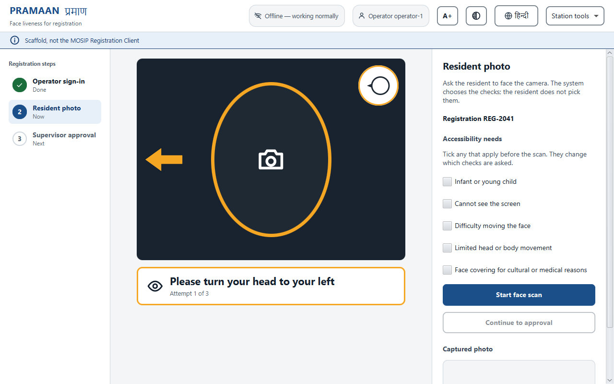
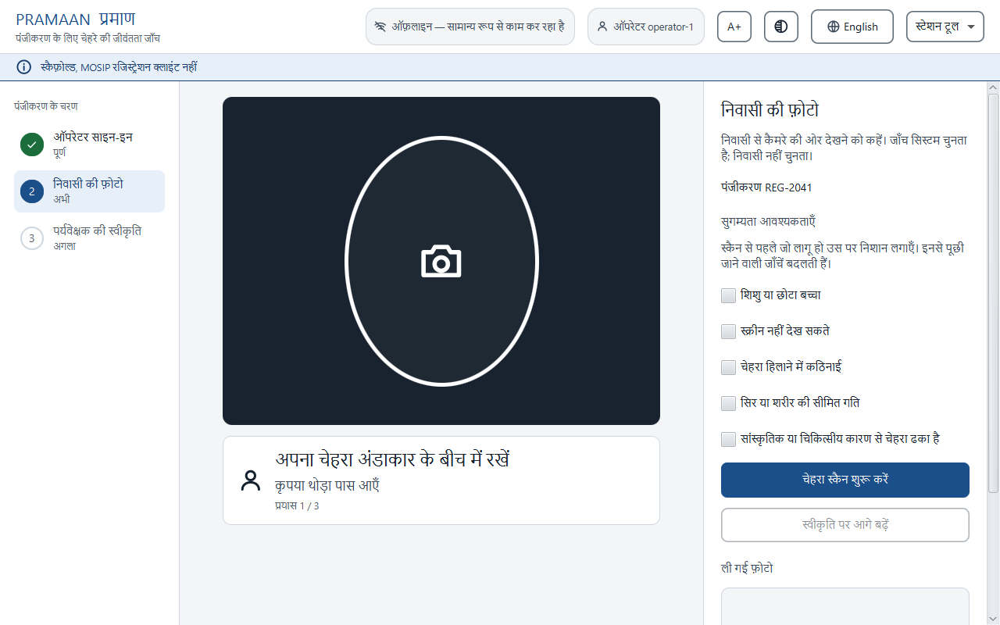

Proof, not a verdict. Face liveness and presentation-attack detection for the MOSIP Registration Client
A resident's face is captured through a certified SBI device. Liveness is judged on the device's live preview stream, but the photo that gets stored is the device's signed capture, and nothing links the two. Whoever controls the preview can pass liveness with one face and have another enrolled. On Android the client never sees preview frames at all. Injected video (a virtual camera such as OBS, a deepfake pipeline) is outside ISO/IEC 30107, which covers presentation attacks only. A corrupt operator can log in with a photo of a supervisor. And a pass/fail made on the client cannot be re-checked by the server later, or re-scored when better models exist.
PRAMAAN defines the two interfaces the problem statement asks for: FaceFrameSource (frames and the signed capture from the same object, which is what makes binding possible) and LivenessEngine (frames in; states, guidance and a decision out, never a score to the screen). The same Java engine runs on desktop inside the client (Mode C) and on Android inside the SBI device app as a library (Mode D). Before it accepts a face it answers seven questions in order: is the stream from a real sensor, is there one usable face, does it look alive without asking anything, does it carry the marks of an attack instrument, what do all the cues say together (accept, challenge or reject), did a live person answer a challenge nobody could have predicted, and is the stored face provably the one that passed.

The station screen, rendered from the real code (no live camera). One plain sentence and an icon; no score, no cause.
others map (the bdb is untouched). A server can re-verify it with one command,
or re-score stored crops with a newer model. A transparency log (Merkle, matching the Certificate Transparency test vectors) makes omission detectable.
The same screen in Hindi (machine-drafted, unreviewed), with the larger-text and high-contrast switches in the header.
The operator sees a step rail (sign-in, resident photo, supervisor approval), plain-language messages and one task at a time; the resident sees one sentence and an icon. Quality problems get guidance ("Please improve the lighting") and do not use up an attempt; security problems get a generic message that reveals nothing an attacker could adapt to. Larger-text and high-contrast modes, 44 px targets, visible focus, Hindi on every screen. Every status has an icon and a word, never colour alone.
| Verified (a property of the code, one command each) |
|---|
| 665 automated tests pass (2 skipped: they need MockMDS); full build green on 2026-10-24 |
| Flash code: 6 colours × 8 steps = 1,679,616 sequences = 20.7 bits; uniform draws (χ²) |
| Photosensitivity: at most 3 colour changes a second, checked on 900 sequences |
| Insider signal: 6 failures in 40 at a 2% baseline gives z ≈ 5.87 |
| Transparency log matches the CT test vectors; capture-swap negative tests; fails closed |
| Not done, and not claimed |
|---|
| No measured error rate on real attacks; flash, stereo, scene cues tested on synthetic data and fakes only |
| Not run on a real device, a phone, or a certified SBI device; the desktop app is a scaffold, not the Registration Client |
| No operator or resident has used the screens; the Hindi is machine-drafted and unreviewed |
| Red-team R-01: the moiré cue is blind at some display pitches. R-03: with no flash light the fusion can accept a synthetic screen replay (4 of 85 pitches; 0 with a flash cue). Fix proposed, not enabled |
(1) One real experiment: does the flash cue separate a live face from a replay on a laptop (recorder and analyser are built). (2) A consented corpus and the calibrator that is already written, so every threshold comes from data. (3) A real device, a second camera, a phone. (4) Ask MOSIP how an SBI extension should be proposed, and settle two model licences.